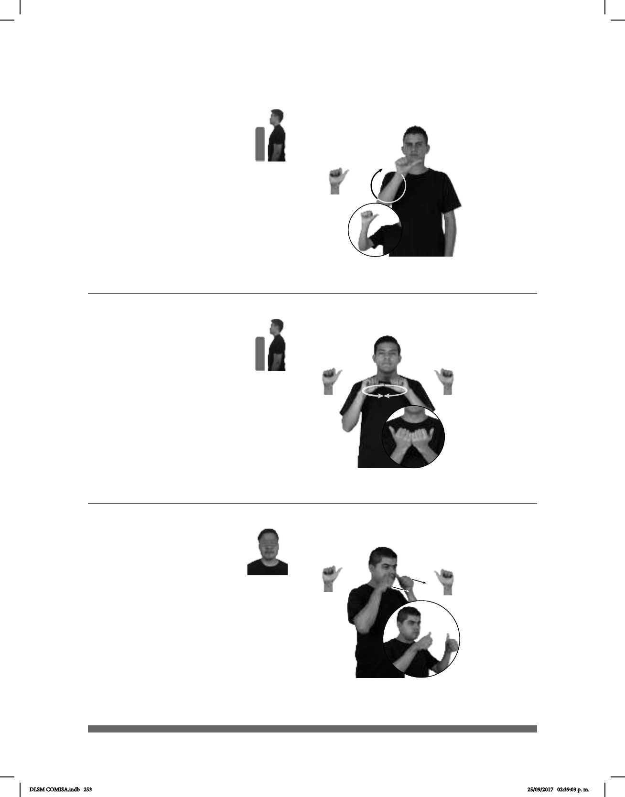

253
(A-61)
FILIPINAS pos-SUYO ASIA
Filipinas está en Asia.
(A-62)
ASOCIACIÓN FUTBOL JUVENIL pro-YO YA AFILAR
Pertenezco a una asociación de futbol juvenil.
1
/ Atender
2
(A-63)
________________________________________________o.i.g.
pos-TUYA MAESTRO+MUJER TÚ-PONER-ATENCIÓN-a-ella
¿Le pusiste atención a tu maestra?
Seña: SM
A.1
Palma hacia afuera.
A la altura del cuello.
La mano se mueve
formando un arco hacia abajo.
Continente situado
Seña: SS
A.1
Palmas hacia afuera.
A la altura del pecho.
Las manos se mueven
formando un círculo hacia enfrente.
Simula un grupo de
personas.
sust. f. Contrato legal por
medio del cual dos o más personas se
a cabo una actividad, generalmente no
lucrativa (asociación civil), aunque en
(asociación mercantil); organismo o
corporación que resulta de ese contrato.
Seña: SS
A.1
Palmas hacia el centro.
Sobre los pómulos.
Recto hacia enfrente.
Simula la acción de
distraerse.
1. sust. f. Operación
intelectual por medio de la cual la mente
toma como objeto de su consideración un
estímulo o un conjunto reducido de estos
presentes en un momento dado, haciendo
caso omiso de los otros; capacidad para
realizar esta operación y acto de ejercerla.
2. v. intr. Fijar los sentidos es una sola
tarea para maximizar las funciones.
DLSM COMISA.indb 253 25/09/2017 02:39:03 p. m.